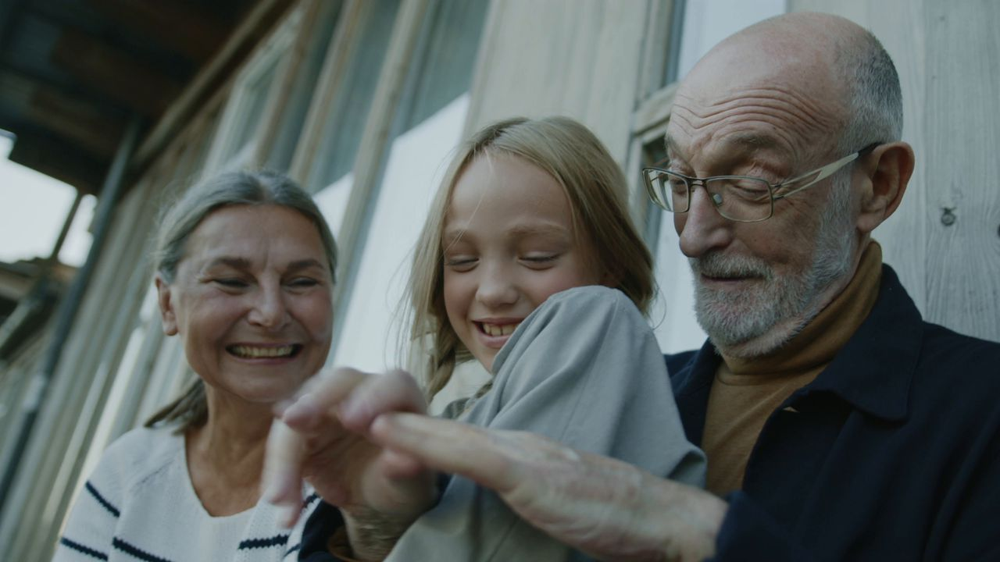

people in the world will be aged 60 or over by 2030.
World Health Organization, Ageing and health
Bar-Ilan University · Health 360 Center
Longevity & Lifelong Wellbeing Advisory Practice
A professional certificate. Live online, from Bar-Ilan University.Six courses, 30 live sessions and a supervised capstone that prepare health, wellbeing and people professionals to turn the science of healthy aging into structured, non-clinical practice.
Feb 2027First semester
6 · 30Courses · 90-minute live sessions
~100 hOf learning in about eight months
Live onlineWith a supervised practicum and capstone
Developed within Bar-Ilan University’s Health 360 Center, led by Prof. Nadav Davidovitch, in collaboration with Bar-Ilan Akadima.
Why now
People are living longer. Living well takes expertise.
The question has shifted from how long we live to how many of those years are lived in good health.
Research on healthy aging points to factors that people and organizations can influence: what we eat, how we move, sleep and recover, how we manage stress, and whether we have purpose and strong social ties. At the same time, longevity has become a crowded market of claims that often run ahead of the evidence.
What is missing is a professional who can read that evidence critically, translate it into realistic, structured plans, and know where advisory work ends and clinical care begins. This program was designed to train that professional, and to treat longevity as a professional discipline rather than a general enrichment course.
of Americans were 65 or older in 2024 (61.2 million people), up from 12.4% in 2004.
U.S. Census Bureau, Vintage 2024 population estimatesThe number of people aged 80 or older is expected to triple between 2020 and 2050, to 426 million.
World Health Organization, Ageing and healthThe role
A defined professional role: the longevity and wellbeing advisor.
Graduates add a defined advisory specialization to their existing professional role, or take on an independent coaching or advisory practice. The work is evidence-informed, structured and non-clinical, and it follows one method in every setting.
- 1
Assess
Conduct and document a structured, non-diagnostic longevity and wellbeing assessment.
- 2
Plan
Co-create an individualized plan with measurable goals and an appropriate follow-up process.
- 3
Support
Apply behavior-change and communication tools in individual or group settings.
- 4
Review
Review progress, adjust the plan and document the work, from implementation to follow-up.
Scope & referral
Throughout the cycle, the advisor maintains professional boundaries, recognizes red flags and refers to a licensed professional whenever a need falls outside the non-clinical scope.
Within organizations
- Lead or contribute to wellbeing and health-promotion initiatives
- Assess employee or community needs
- Develop, implement and review evidence-informed programs
- Advise teams on applying healthy-longevity principles
- Help embed wellbeing into organizational practice and culture
With individuals
- Conduct a structured, non-diagnostic longevity and wellbeing assessment
- Co-develop a realistic, evidence-informed plan
- Support goal setting and behavior change
- Review progress over time
- Recognize situations that require referral to a licensed professional
For employers
Sponsoring staff members builds internal capacity to turn longevity and wellbeing evidence into practical initiatives: identifying workforce or community needs, designing and evaluating programs, coordinating referrals when specialist input is needed and strengthening a culture of wellbeing.
Who it’s for
For professionals who already guide people.
The full certification pathway is intended primarily for professionals who want to broaden their existing work through a specialization in longevity and wellbeing.
- 01Health promotion and public health professionals
- 02Nurses and other professionals working in health systems
- 03Welfare, employee wellbeing and human resources managers in organizations
- 04Professionals and program staff in local authorities
- 05Professionals working in elder care, community-based and residential
- 06Professionals in nonprofit, civil-society and community organizations
- 07Other qualified professionals whose role includes health, wellbeing, education, workforce development or community programming
Curriculum
Four stages. Six courses. One professional sequence.
Rather than a collection of independent courses, the program is a coherent sequence: from scientific foundations to evidence appraisal, practical skills, supervised application and a capstone portfolio.
Stage 1Scientific foundations
Stage 2Health behaviors and daily practice
Stage 3Emotional and social wellbeing
Stage 4Practicum and capstone
1 / 7 · Swipe to explore
 01Stage 1
01Stage 1The Science of Longevity What Actually Extends Life?
The scientific foundations of longevity and healthy aging: major biological processes, population-level findings, risk and protective factors, and the distinction between established evidence and emerging or unsupported longevity claims.
- Biological processes of aging
- Population-level findings
- Risk & protective factors
- Appraising longevity claims
Evidence in focus14.0 yrs
longer projected life expectancy at age 50 for U.S. women who adopted five low-risk lifestyle factors, compared with none (12.2 years for men). Observational cohort data.
Li Y et al., Circulation, 2018 02Stage 2
02Stage 2Food as Medicine Nutrition for Lifelong Health
The relationship between food, chronic disease prevention, functional health and healthy aging, with evidence-based nutritional principles applied in different personal, cultural and socioeconomic contexts. Health inequities in access to food and food culture are central.
- Chronic disease prevention
- Functional health
- Cultural & socioeconomic context
- Food equity
Evidence in focus11 million
deaths worldwide in 2017 were attributable to dietary risk factors.
GBD 2017 Diet Collaborators, The Lancet, 2019 03Stage 2
03Stage 2Habits That Shape Health Behavior Change and Longevity
How habits are formed, maintained and changed, with practical behavior-change tools, and how individual choices are shaped by family, community, environment and wider social systems, including ingrained inequality in social structures.
- Habit formation
- Behavior-change tools
- Family & community influences
- Social structures
Evidence in focus66 days
median time for a new daily behavior to become automatic in a real-world study, with a range of 18 to 254 days.
Lally P et al., European Journal of Social Psychology, 2010 04Stage 2
04Stage 2Sleep, Stress, and Healthy Aging
The roles of sleep, stress, recovery and physiological regulation in lifelong health, the common barriers to healthy routines, and realistic strategies for improving sleep and stress management.
- Sleep & recovery
- Stress & regulation
- Barriers to routines
- Realistic strategies
Evidence in focus1 in 3
U.S. adults reported typically sleeping less than seven hours in a 24-hour period.
Liu Y et al., CDC MMWR, 2016 05Stage 3
05Stage 3Purpose, Meaning, and Emotional Wellbeing
The relationship between emotional wellbeing, purpose, resilience, identity, life transitions and healthy aging, with reflective tools that can be applied personally or in professional and community settings.
- Purpose & resilience
- Identity
- Life transitions
- Reflective tools
Evidence in focus2.43×
higher all-cause mortality hazard among U.S. adults over 50 with the lowest life-purpose scores, compared with the highest. An observational association.
Alimujiang A et al., JAMA Network Open, 2019
06Stage 3Social Connection and Longevity
Social connection as a central dimension of health and longevity: loneliness, belonging, family and community relationships, social participation, and the development of supportive environments across the life course.
- Loneliness & belonging
- Family & community
- Social participation
- Supportive environments
Evidence in focus50%
increased likelihood of survival associated with stronger social relationships, across 148 studies and 308,849 participants.
Holt-Lunstad J et al., PLoS Medicine, 2010 04Stage 4
04Stage 4Practicum and Capstone
Following the six courses, participants integrate the program’s scientific, behavioral, emotional and social perspectives through at least one supervised practice case and a capstone portfolio, then present and defend their work in two concluding sessions.
- Supervised practice case
- Capstone portfolio
- Practicum & capstone clinics
- Presentation & oral assessment
The professional-practice strand
A continuous strand runs through every course. Participants build their supervised practice case and capstone portfolio progressively throughout the program.
- Structured intake
- Non-diagnostic assessment
- Goal setting
- Behavior change
- Ethical practice
- Documentation
- Professional boundaries
- Red flags
- Referral
Assessment
Competence, demonstrated.
Achievement is evaluated throughout the program rather than through attendance alone, culminating in a supervised practice case and a capstone portfolio you present and defend.
How your work is weighted
- Participation, engagement and professional conduct10%
- Course knowledge checks20%
- Applied assignments and case-based skills assessments30%
- Supervised practicum and capstone portfolio30%
- Final presentation and oral assessment10%
Suggested weighting in the program proposal, which may be adjusted according to Bar-Ilan Akadima’s academic and certification requirements.
Your capstone portfolio
- A structured intake and non-diagnostic longevity and wellbeing assessment
- A clearly defined client or target-population profile and longevity-related need
- An evidence summary drawing on credible sources and content from at least four courses
- A collaborative, prioritized plan with measurable objectives
- Documentation of implementation, follow-up, feedback and modifications
- Risks, ethical issues, professional limits and referral considerations
- A reflective analysis of your decisions, challenges, learning and next steps
Conditions for certification
85%Attendance at synchronous sessions, plus all required practicum and capstone clinics
70%Minimum grade in each course
75%Minimum overall program grade
1+Supervised practice case completed, and capstone portfolio approved
OralFinal presentation and oral assessment passed
Format & length
Live, online and deliberately practical.
Synchronous online instruction by trained instructors, guided independent learning in the Health 360 digital knowledge library, short applied assignments between courses, and instructor feedback throughout.
30Live sessions of 90 minutes: 45 clock hours, or 60 academic hours, of live instruction
~100hTotal learning load, including guided independent study and practicum work
~8monthsOver 30 teaching weeks, excluding institutional breaks. First semester: February 2027
The 30 live sessions
- Course sessions across the six courses24
- Orientation and professional scope1
- Practicum and capstone clinics3
- Final presentation and oral-assessment sessions2
- Live sessions in total30
About 100 hours of learning
- Live instruction45 h
- Guided independent learning~30 h
- Practicum and capstone work~25 h
- Total learning load~100 h
Faculty & academic leadership
Faculty led by Prof. Nadav Davidovitch.
The program was developed within Bar-Ilan University’s Health 360 Center and is taught under the academic responsibility of Bar-Ilan Akadima and Health 360.

Founder & head, Health 360 Center
Prof. Nadav Davidovitch
Full Professor, Bar-Ilan University
- Medical specialist in Epidemiology and Public Health, with a Ph.D. in the History and Sociology of Health
- Founded and leads the Health 360 Center, a multidisciplinary research center at Bar-Ilan University
- Head of the Health Policy Program at the Taub Center and Chairman of the Public Health Forum of the Israel Medical Association
- Member of the Board of Governors of the Association of Schools of Public Health in the European Region (ASPHER)
- Formerly Director of the School of Public Health at Ben-Gurion University of the Negev
Health 360 Center, Bar-Ilan University
A multidisciplinary research center that serves as an innovation hub for advancing health and social responsibility through systems thinking, interdisciplinary research and cross-sector collaboration.
Through research clusters spanning multiple faculties, the Center develops responses to pressing public health and societal challenges. It has existing partnership and teaching experience with ASPHER, the Israeli Ministry of Health and the Israeli Health Funds.
- Longevity
- Diabetes & obesity
- Addiction
- Mental health
- Climate change
How the program is governed
- An academic director appointed or approved by Bar-Ilan Akadima and Health 360 holds responsibility for the syllabus, professional scope, assessment standards and certification decisions
- Core content is developed or approved by Health 360 subject-matter experts
- Instructors receive program-specific training and teaching materials
- Standardized practicum, capstone and observed-skills rubrics are used across cohorts
- Course materials are periodically updated to reflect new evidence in longevity research
The certificate
A university certificate, with a clear professional scope.
An academic home, a quality-assurance framework and an honest account of what the certificate is, and what it is not.
Professional Certificate in Longevity and Lifelong Wellbeing Advisory Practice
Issued through Bar-Ilan University’s Akadima and Health 360 Center, in partnership with Longevity Life Academy.
Proposed graduate designationCertified Longevity and Lifelong Wellbeing Advisor
Subject to final institutional approval, approved nomenclature and branding requirements.
International quality standards
As part of our commitment to academic excellence and international quality standards, the program is currently preparing to apply for accreditation by APHEA (Agency for Public Health Education Accreditation) under its Continuing Training & Educational Event (CTEE) accreditation framework.
Scope of practice
The certificate adds a defined advisory specialization to a graduate’s professional role. It does not confer a medical, nutritional, psychological or other regulated clinical license: graduates may not diagnose disease, prescribe treatment, alter medication or provide services reserved for licensed professionals unless separately qualified.
Full certification
The complete professional sequence: all six courses, assessment, supervised practice, a capstone portfolio and final evaluation. Successful completion leads to the professional certificate and the proposed graduate designation.
Standalone courses
Individual subject courses for members of the general public and for professionals seeking focused continuing education. Completion may lead to a course-specific certificate of completion or participation, subject to Bar-Ilan Akadima policy; it does not confer the professional certificate or the designation.
Building toward the full certificate. Subject to Bar-Ilan Akadima policy, participants who complete eligible standalone courses and later meet the admission requirements for the certification pathway may apply to have those courses recognized toward the full program. Additional assessments, practicum requirements or time limits may apply.
Admissions
Join the February 2027 semester.
The first semester is scheduled to open in February 2027. Request the program information pack to receive the full details.
Request information
Share your details, your expected enrollment timing and your main goal. An advisor follows up with the full program information.
Request informationTuition and payment plans
Tuition and payment plans are shared on application, together with the information pack.
Ask about tuitionEmployer sponsorship
Organizations can sponsor staff members to build internal capacity for evidence-informed wellbeing and health-promotion initiatives.
Ask about sponsorshipInsights
The science behind the program.
Evidence-based articles, mapped to the six courses, with full references to the research.
1 / 6 · Swipe to explore
Course 1 · Science of longevity
What actually extends healthy life, and what remains unproven
Healthspan, not lifespan alone, is the goal, and the evidence ranges from well established to emerging to unsupported.
6 min read · 11 referencesCourse 1 · Evidence appraisal
Appraising longevity claims, from study design to supplement labels
A practical framework for separating evidence-based practices from claims that lack sufficient support.
6 min read · 12 referencesCourse 2 · Nutrition
Food as medicine, from dietary pattern trials to equitable practice
What trials and global burden studies say about dietary patterns, and why cost and culture shape what people eat.
6 min read · 11 referencesCourse 3 · Behavior change
An evidence-based behavior change toolkit for longevity advisors
How COM-B, behavior change techniques, habit formation and motivational interviewing fit together.
5 min read · 10 referencesCourse 4 · Sleep and stress
Sleep and stress regulation as foundations of healthy aging
Short sleep is common and chronic stress leaves measurable traces; advisors support realistic routines.
6 min read · 12 referencesCourse 6 · Social connection
Social connection and longevity, from loneliness to supportive environments
Weak social ties are linked to earlier death, heart disease, stroke and dementia.
5 min read · 13 references
FAQ
Questions, answered plainly.
Is this a university degree?
No. It is a structured professional-training and certification program. Participants who complete all requirements receive the Professional Certificate in Longevity and Lifelong Wellbeing Advisory Practice, issued through Bar-Ilan University’s Akadima and Health 360 Center, in partnership with Longevity Life Academy, subject to final institutional approval.
What will the certificate allow me to do?
Graduates who meet all academic, practical, assessment and conduct requirements will be eligible to use the proposed designation Certified Longevity and Lifelong Wellbeing Advisor. The certificate adds a defined advisory specialization to your existing professional role, or allows you to take on an independent coaching or advisory practice. It does not confer a regulated clinical license.
Who should apply?
Professionals who want to broaden their existing work through a specialization in longevity and wellbeing: health promotion and public health professionals, nurses and others in health systems, employee wellbeing and HR managers, local-authority staff, elder-care professionals, staff of nonprofit and community organizations, and other professionals whose role includes health, wellbeing, education, workforce development or community programming.
What are the admission requirements?
A relevant academic degree or recognized professional qualification is recommended. Applicants with substantial relevant experience may be admitted following individual review. All certification participants commit to the attendance, assessment, practicum and professional-conduct requirements and acknowledge the program’s scope of practice.
How is the program delivered?
Live online. There are 30 synchronous sessions of 90 minutes: 24 course sessions across the six courses, one orientation and professional-scope session, three practicum and capstone clinics and two final assessment sessions. Together with about 30 hours of guided independent learning and about 25 hours of practicum and capstone work, the total is about 100 hours over 30 teaching weeks, normally completed in about eight months.
When does the program start?
The first semester is scheduled to open in February 2027.
Who teaches the program?
The faculty is led by Prof. Nadav Davidovitch, founder and head of the Health 360 Center. Core content is developed or approved by Health 360 subject-matter experts, live sessions are taught by trained instructors with program-specific training, and an academic director appointed or approved by Bar-Ilan Akadima and Health 360 is responsible for the syllabus, professional scope, assessment standards and certification decisions.
How is my work assessed?
Throughout the program: participation, short knowledge checks, applied and case-based assignments, an observed or recorded skills assessment, a supervised practice case, a progressively developed capstone portfolio, and a final presentation and oral assessment. Certification requires at least 85% attendance at synchronous sessions and all required clinics, at least 70% in each course and 75% overall, an approved portfolio and a passed final oral assessment.
Can I take a single course first?
Yes. Standalone courses are open to the general public and to professionals seeking focused continuing education, without the practicum, capstone portfolio or final professional assessment. Subject to Bar-Ilan Akadima policy, eligible standalone courses may later be recognized toward the full certification pathway.
How much does it cost?
Tuition and payment plans are shared on application, together with the program information pack. Employer sponsorship is also possible.
Request information
Begin your path for February 2027.
Leave your details and receive the full program information, including tuition and payment plans.
- 1The program information pack, with the curriculum, format and certification requirements
- 2Tuition and payment plans for the February 2027 semester
- 3A conversation with an advisor about your goals and eligibility
Thank you.
We have received your request. An advisor will be in touch with the full program information.